Prototipo con los sprites y triángulos reales del juego. Vivo: npx vite --port 5173 y /mockups/aliados/proto.html?s=errante (también kael-alta, kael-baja, kael-hostil, prisionero, rojo, hud).
internals.ts): merc (el contratado a Grizk, de Garra Roja, o el prisionero liberado) y rival (el errante de la expedición, Kael u otro, que pasa a aliado con disposition: 'allied').mercForExpedition);freeCaptive);rivalPropose);freeCaptive solo mira merc: con un errante aliado deja liberar al prisionero → jugador + Kael + prisionero.rivalPropose no mira nada: con un contrato de Grizk puedes aliarte también con Kael. Sí: se puede entrar con un contratado y además aliarse con un errante.startCombat mete al mercenario si está vivo y, si no, al errante aliado (máximo dos por bando). El otro queda fuera del combate pero sigue «aliado»: cobra su parte de cofres y del oro en el portal, puede traicionarte, y el HUD enseña las dos tarjetas. Ese es el estado incoherente.kael.grudge, de 0 a 3): sube si le niegas su parte o le atacas, baja si extraéis juntos y le pagas, y con 1 o más sale con riesgo naranja. Lo convierto en los tres niveles de confianza.| Errante (o Kael) nuevo | Prisionero nuevo | |
|---|---|---|
| ⛨ Quedarte con tu aliado | El errante se queda donde estaba, neutral: si tu aliado cae, puedes volver a buscarlo. | Sigue encadenado y puedes volver. Opción extra: romper sus cadenas y dejarle marchar. No se une, huye por su cuenta y no se desbloquea para contratar, pero se lo cuenta a Grizk: +25 de reputación. |
| ⇋ Separar caminos |
| |
| ✕ Traicionar |
| |
config/wanderers.ts)| Nivel | Cuándo | Efecto | Al encontrarlo |
|---|---|---|---|
| Alta | Al empezar (y todos los personajes actuales) | Triángulo verde ✓, 10 % de traición | «Mira quién sigue vivo. Me alegro, de verdad.» |
| Baja | 1 o 2 traiciones | Triángulo naranja !!, 25 % de traición | «Otra vez tú. Me aliaré, que el oro no entiende de rencores. Pero esta vez dormiré con un ojo abierto.» |
| Hostil | 3 traiciones | Triángulo rojo ⚔: no se alía y te ataca al verte | «Te dije que no olvidaba. Aquí se acaba.» |
grudge).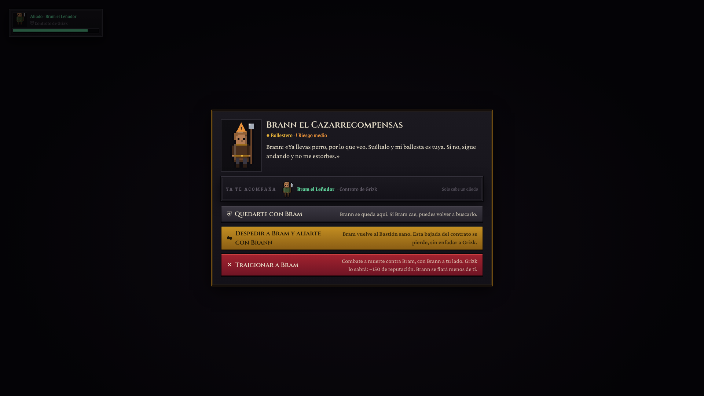
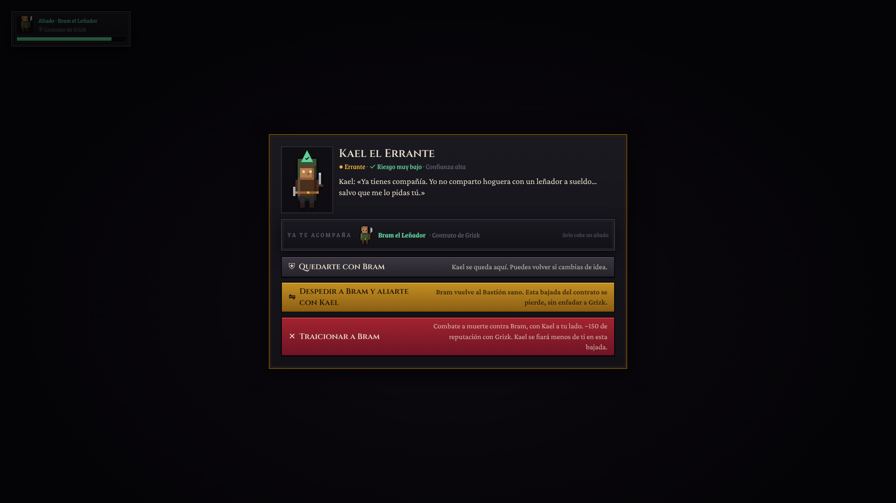
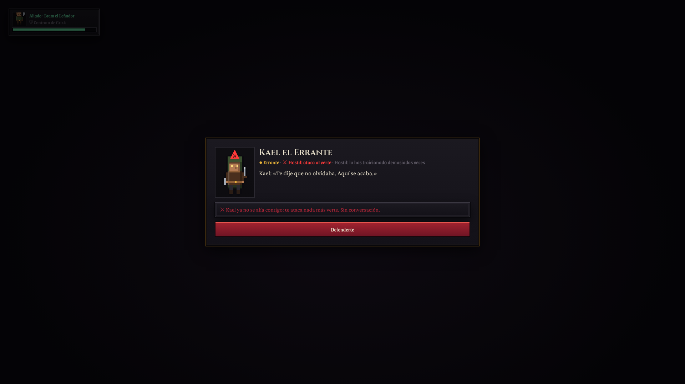
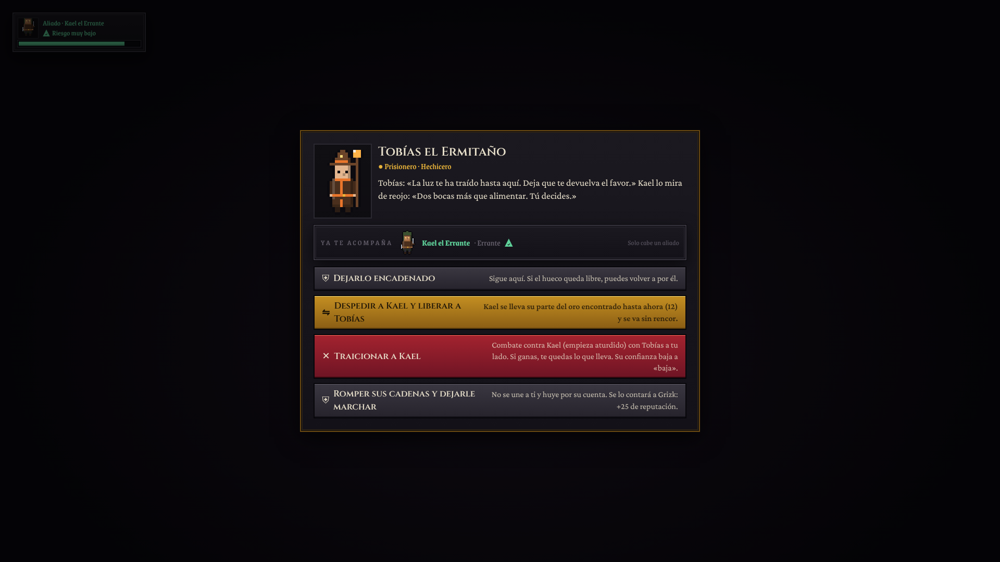
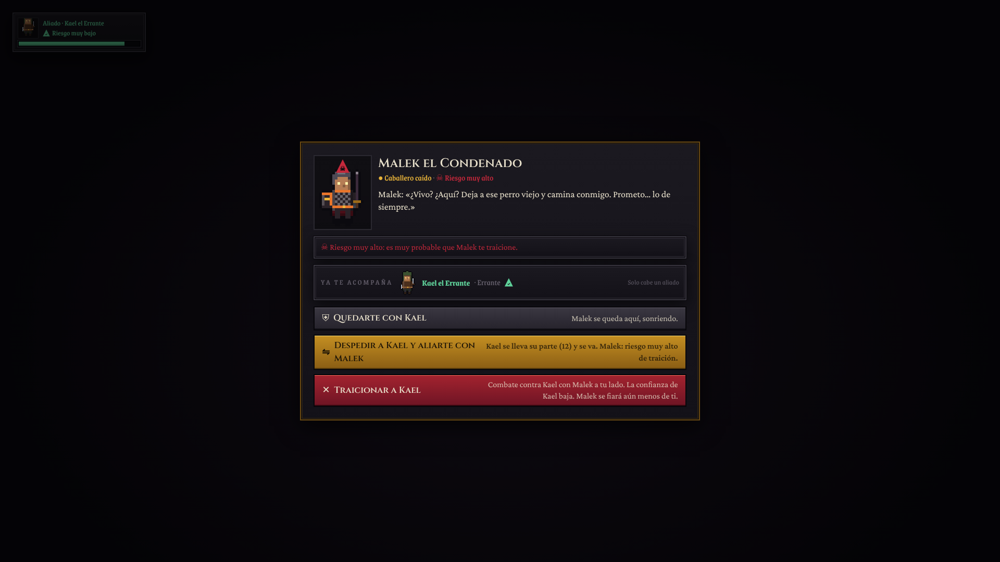
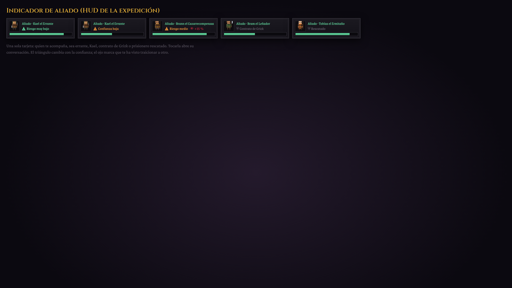
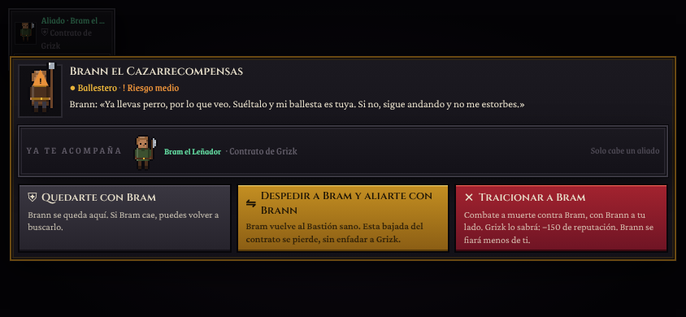
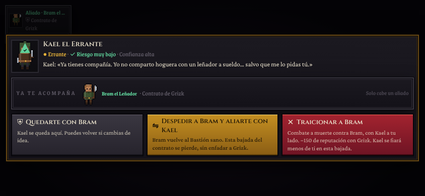
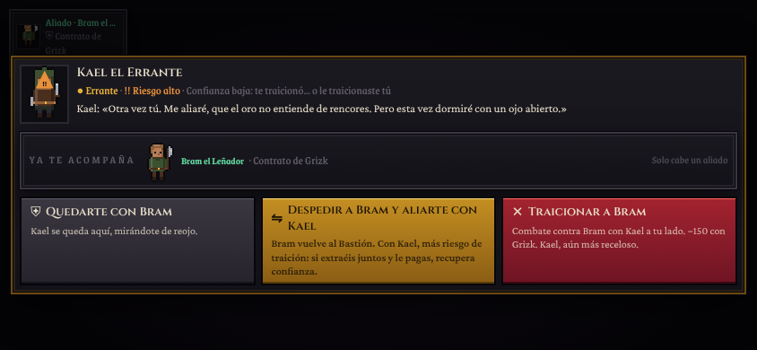
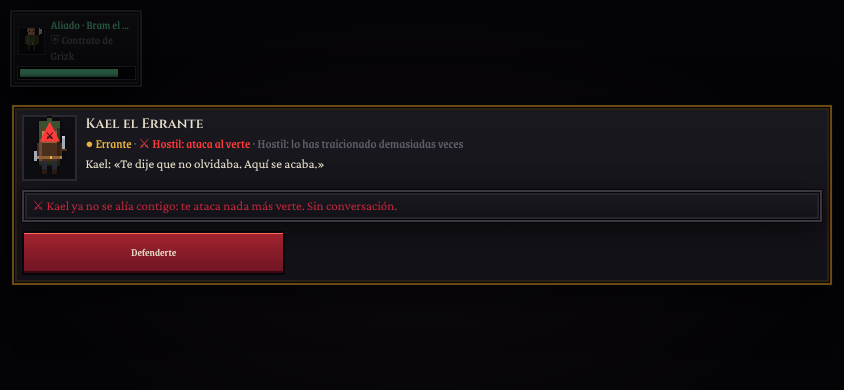
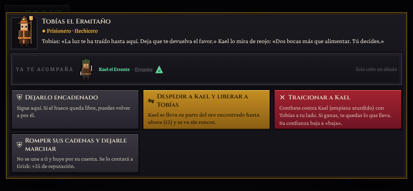
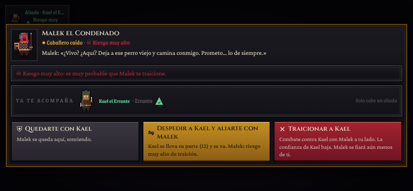
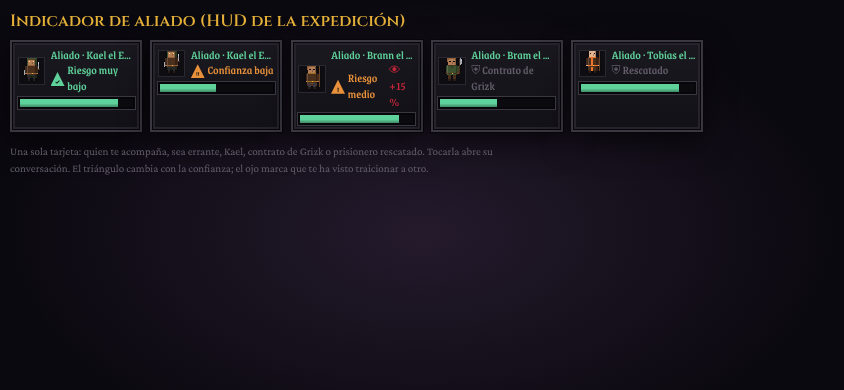
?debug&ally=bram&captive=tobias&kael=1 entra con un contrato, con prisionero en el mapa y con Kael tras una traición. También __GRAVEVOW__.actions.devKaelTrust(n).